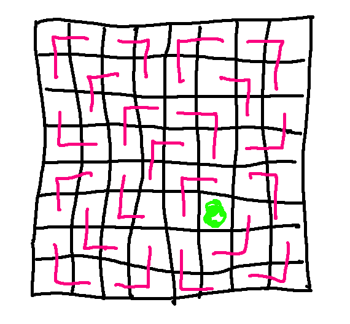

Let's look at a slightly different sort of induction proof. I'm not going to write this up as a full formal proof. Let's just at the structure of how the proof will work.
Here is a picture of a "right triomino."
Suppose we have a 4x4 checkerboard like this, where someone has covered up one square. In this case, planted a tree there.
We can tile this with right triominos. By "tile," I mean that we can cover it with right triominos, covering each square exactly once.
This also works for an 8x8 checkerboard with the missing square in a different position.

I claim that this works for any square checkerboard whose side length is a power of 2.
Notice that the claim applies to many checkerboards of each size, because we can pick any square to be the missing one. So our induction variable n is the size of the checkerboard. Each step in the induction will prove that all checkerboards of that size will work.
Also notice that "size" means the exponent. So the nth step covers checkerboards with sidelength \(2^n\).
So we should be careful about stating our claim to make n obvious. For example:
Claim: for any positive integer n, any \(2^n\) by \(2^n\) checkerboard with one square missing can be tiled with right triominos.
What's the smallest square checkerboard whose side length is a power of 2?
We could start with the 2x2 checkerboard. There's four possible places to put the missing square. For each one of them, you can cover the other three squares with a right triomino. However, there is a smaller checkerboard of the right type: a \(2^0\) by \(2^0\) checkerboard whose only square is missing. This can be tiled with zero right triominos.
OK, better adjust our claim, because zero is not a positive integer.
Claim: for any non-negative integer n, any \(2^n\) by \(2^n\) checkerboard with one square missing can be tiled with right triominos.
When working with geometrical objects like this, the best way to present the base case often involves pictures.
For a proof, it's enough to show the smallest base case, i.e. the 1 by 1 checkerboard. However, it's not wrong to add a second base case for the 2 by 2 checkerboards, to help the reader understand. Extra base cases are fine as long as they don't get too long and make the proof hard to read. Or you could do the proof with just the smallest checkerboard, but then show the reader some supplementary pictures of several small sizes of checkerboard.
Our inductive hypothesis is that the claim holds for any checkerboard up to some bound k. More precisely...
Inductive hypothesis: any \(2^n\) by \(2^n\) checkerboard with one square missing can be tiled with right triominos, for n = 0, ..., k.
The big trick is the inductive step. We can divide any \(2^n\) by \(2^n\) checkerboard into four smaller checkerboards, each with side length \(2^{n-1}\).
One of these four small checkerboards is missing a square. We can force the other three to be missing a square by placing a single right triomino in the middle.
Now we use our inductive hypothesis on each of the small checkerboards. Each of them can be tiled with right triominos. And then we can make a tiling for the big checkerboard using those tiling, plus the one triomino that we put in the middle.
So we've shown that if the inductive hypothesis is true, i.e. we can tile the smaller checkerboards, then we can also tile the larger checkerboard. That's our goal at the end of the inductive step.
It's perhaps more compelling to think of this as the design for a computer program that would tile checkerboard for you. The place where we invoke the inductive hypothesis in the proof is exactly where your program would do a recursive function call.